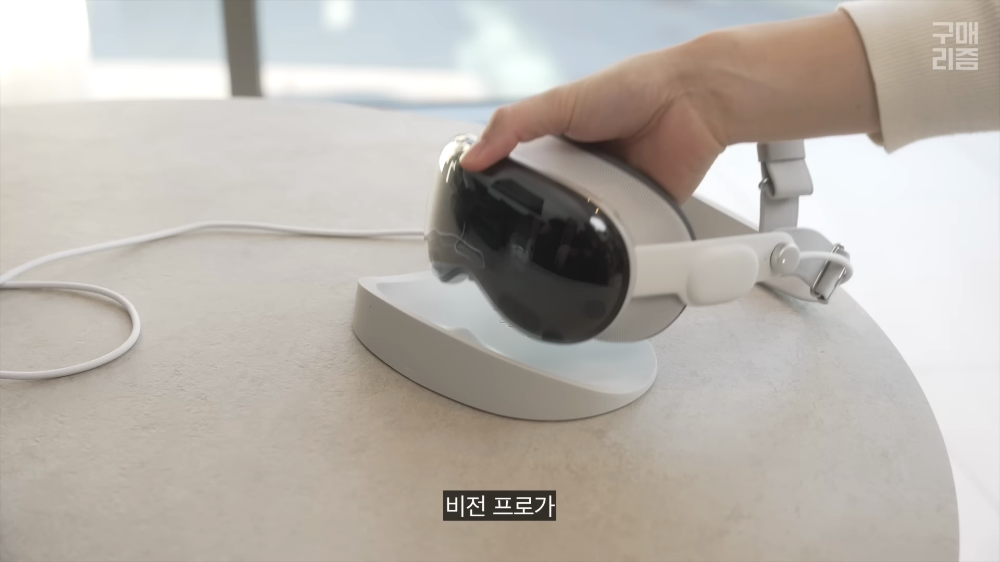
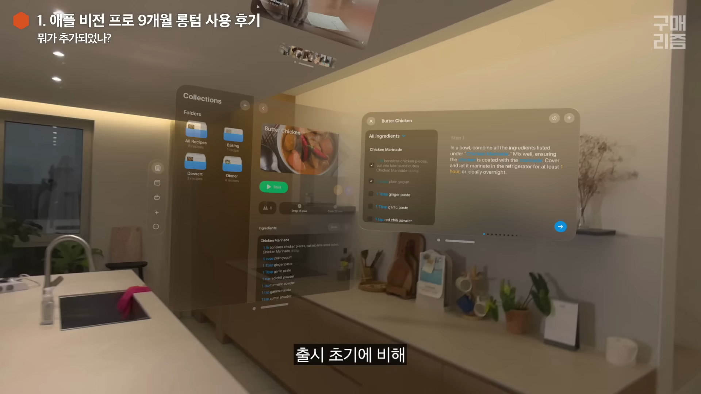
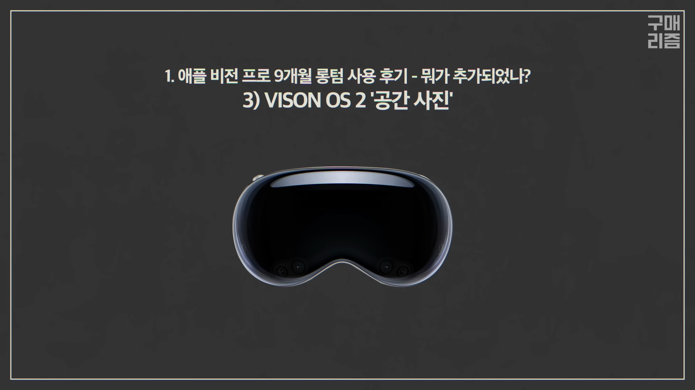
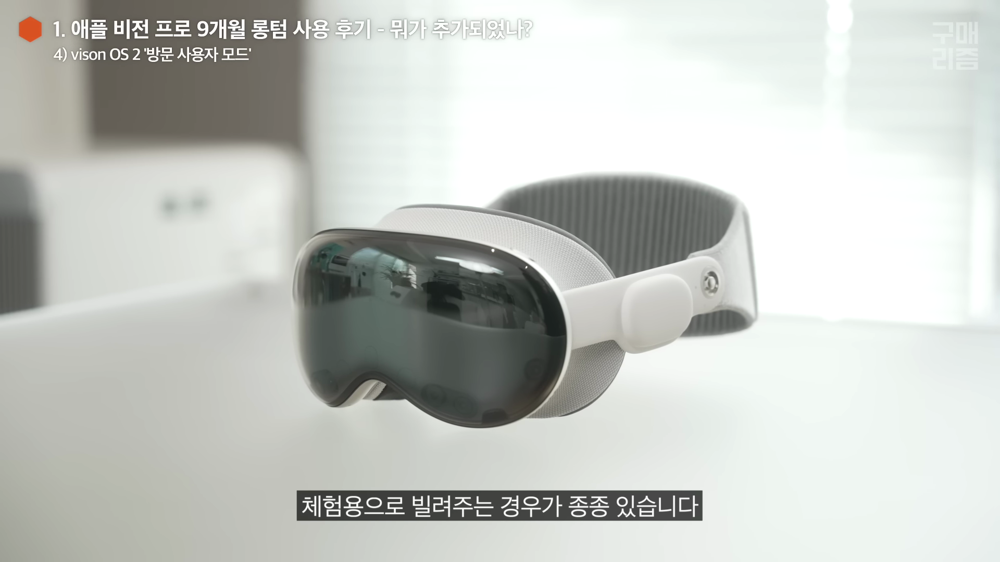
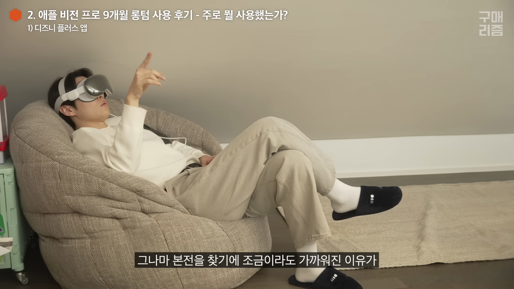
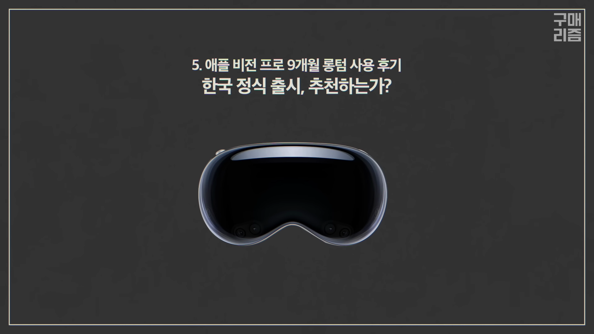

2023년 11월 15일 애플 비전 프로가 한국에 정식 출시되며 많은 이의 주목을 받고 있습니다. 그런 만큼, 사용자의 생생한 후기를 통해 이 기기가 실제로 얼마나 유용한지, 출시 이후의 변화는 무엇인지, 그리고 어떤 기능이 추가되었는지를 알아보겠습니다. 
비전 프로 출시와 사용자 후기
- 비전 프로가 한국에서도 정식 출시되었다는 소식
- 9개월 간의 사용 후기를 통해 고객의 가치 전달
비전 프로가 미국에서 출시된 지 9개월, 마침내 한국에서도 정식 출시되었습니다. 이 영상에서는 비전 프로 사용자의 실제 사용 경험을 중심으로 다양한 정보를 전달합니다.

비전 프로의 주요 변화
- 비전 OS 2 출시로 인한 개선된 기능들
- 한글 지원의 중요성
- 제어 센터 사용 방식의 변화
비전 프로의 운영체제인 비전 OS 2가 공개되며 많은 기능이 추가되었습니다. 가장 주목할 만한 변화는 한글 지원으로, 사용자 편의성을 크게 향상시켰습니다.

비전 프로의 공간 사진 및 비디오 기능
- 입체감이 뛰어난 공간 사진 및 비디오 재생
- 일반 사진을 공간 사진으로 변환 가능
- 재미있게 과거를 회상하게 해주는 기능
비전 프로에서는 공간 사진과 비디오 기능을 통해 입체적으로 재생할 수 있어 생생한 경험을 제공합니다. 특히 일반 사진도 입체 효과로 변환해 주며 사용자의 재미를 더합니다.

비전 프로의 사용자 편의성 및 단점
- 새로운 사용자 데이터를 설정해야 하는 번거로움
- 가상 모니터 기능의 유용성
- 여전히 무게감과 착용 불편함
비전 프로를 사용할 때마다 사용자 정보를 새롭게 설정해야 하므로 번거로움을 겪습니다. 하지만 가상 모니터 기능은 매우 유용하며, 많은 사용자들이 업무용으로 활용하고 있습니다.

비전 프로를 활용한 디지털 콘텐츠 경험
- 디즈니 플러스의 3D 영화 체험
- 신스라이더 등 게임의 몰입감
- 고화질 영상 감상의 이점
비전 프로를 통해 디즈니 플러스에서 3D 영화를 즐길 수 있으며, 신스라이더 게임은 그 몰입감을 극대화합니다. 고해상도의 자연 풍경을 감상하며 힐링하는 경험도 제공합니다.
비전 프로의 액세서리와 추가 기능
- 디스플레이 보호를 위한 필수 액세서리
- 이동 시 안전하고 편리한 충전 방식
비전 프로의 디스플레이와 배터리를 보호하기 위해 클리어 투면 케이스와 실리콘 거치대를 추천합니다. 이동 시에도 안전하고 편리하게 사용할 수 있는 다양한 액세서리들이 있습니다.
비전 프로 사용 시 유의 사항 및 커뮤니티
- 비전 프로를 소유한 주위 사람들에 대한 흥미
- 정기적인 소프트웨어 업데이트 필요
비전 프로는 현재 고가의 제품이라 소유한 사람에 대한 호기심을 자아내지만, 사용하면서 자주 업데이트를 체크해야 합니다. 이를 통해 새로운 기능을 경험할 수 있습니다.

최종 결론 및 추천
- 비전 프로 빌릴 것을 추천
- 데모 체험 기회를 찾아보는 것도 좋은 방법
9개월 사용 후 제 결론은 여전히 비전 프로를 구매하기보다 경험하는 것이 더 낫다는 것입니다. 주변에서 빌려보거나 애플 스토어에서 체험해 볼 것을 추천합니다.
Tags: #비전 프로 #애플 #기기 리뷰 #사용 후기 #가상현실 #디지털 콘텐츠 #기술 변화 #업데이트 #액세서리 추천 #커뮤니티 정보